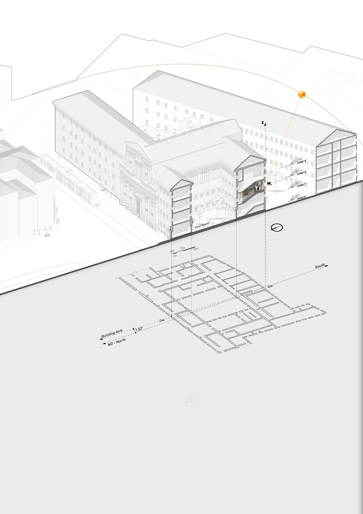

Epigraph“An inch of time on the sundial is worth more than a foot of jade.”
AccessLast Saturday of the month, by reservation with Grenoble Tourisme.
Restorations1755 · 1855 · 1900 · 1918 — no record of which parts.
Preface
Introduction
A hundred square metres of intersecting coloured lines, painted so a stairwell could keep time without a single moving part.
At Stendhal High School, on the stairs of the main building, stands “a magnificent gnomonic monument”. The school is the oldest in Grenoble; its site belonged to the former Collège des Jésuites, and the Society of Jesus had been established in the city since January 1623 by authorisation of Louis XIII. Between 1672 and 1674 the mathematics professor Jean Bonfa used a large stone staircase on the south side of the college to paint a reflected sundial that is still visible today.

René R. J. Rohr called it plainly: “the best known and often mentioned reflected ceiling sundial was painted in 1673 on the walls and ceiling of the stairwell in an ancient Jesuit convent in Grenoble.” The art of making sundials — and reflected ones especially — flourished across the 17th and 18th centuries, when public buildings, churches and townhouses all carried mechanical clocks that still kept poor time and needed constant correction. The sundial remained the reference against which those clocks were set, and gnomonics was taught inside university mathematics.
iThree influences, one room
Three treatises circulated in Grenoble's library while Bonfa worked, and the thesis treats all three as probable sources: the Primitiae gnomonicae catoptricae (1635) of Athanasius Kircher; Emmanuel Maignan's Perspectiva horaria (Rome, 1648), the one directly practical work on reflected dials; and Ignace-Gaston Pardiès's notebook Deux machines propres à faire les quadrans. From Maignan in particular comes the method this thesis reuses — projecting an ideal celestial sphere, and its mirrored twin the catoptric sphere, onto the real surfaces of a room.
iiWhy it needs a companion
Despite its modest scale the mechanism is dense: history, geography, astronomy, mathematics and theology are compressed into one fresco. Even with an experienced guide, a visitor cannot absorb it in a single pass — and access is limited to the last Saturday of each month, a constraint the COVID period only sharpened. The thesis therefore sets out to display every layer visually, so that an ordinary visitor can grasp what Bonfa built.
It proceeds in three parts, mirrored by this site:
- History & principle — the value of the Stendhal dial and the astronomy and gnomonics behind reflected sundials.
- Survey & representation — measuring the staircase, building a 3-D model by photogrammetry, and analysing the hidden system by comparing the scan against ideal theory.
- Digital tool — turning the model into something that can teach and present the room to visitors on the stairs.